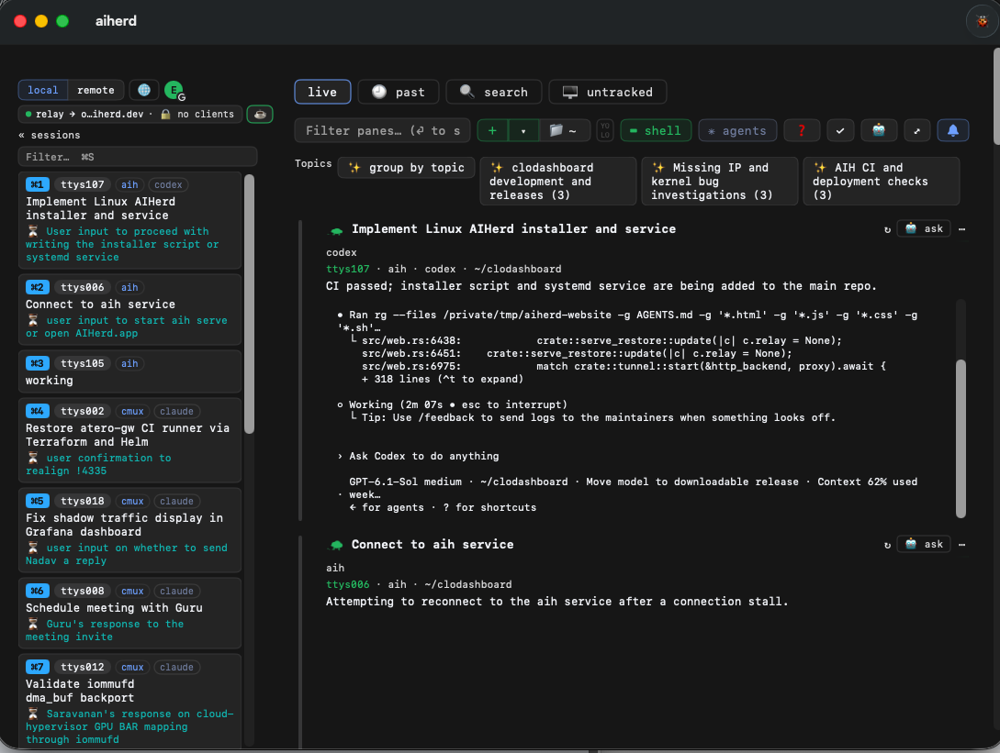

Watch every coding agent in one dashboard
You have six coding agents running in six panes. Five are working and one is blocked on a yes/no question. AIHerd tells you which — 100% local, and it follows Ghostty, iTerm2, Terminal, tmux, cmux and Orca.
brew install --cask aiherd-dev/aiherd/aiherdmacOS 14 (Sonoma) or newer · Apple Silicon or Intel
Install on a headless Linux machine over SSH. The herd runs in the background with systemd, including after logout and reboot.
1. Install and start the service
curl -fsSL https://aiherd.dev/install.sh | bashx86_64 / ARM64 · systemd · fully static Linux binaries. Models download on first run. May ask for sudo to keep the service running after logout.
2. Sign in to expose your herd
export PATH="$HOME/.local/bin:$PATH"
aih loginOpen the printed sign-in URL on your phone or another computer.
3. Add your mobile device
aih joinScan the QR code or open the link, then approve pairing in the terminal.
Check the service: systemctl --user status aih.service.
Logs: journalctl --user -u aih.service -f.
Install the Windows gateway for remote PowerShell terminals, SSH and RDP forwarding. The service starts automatically at boot.
Requires a Windows ZIP in the latest release. If none is listed yet, wait for the next release.
1. Open PowerShell as Administrator and install
Invoke-WebRequest -UseBasicParsing https://aiherd.dev/install.ps1 -OutFile "$env:TEMP\aiherd-install.ps1"
powershell.exe -NoProfile -ExecutionPolicy Bypass -File "$env:TEMP\aiherd-install.ps1"x64 Windows 10 1809 / Server 2019 or newer. Verifies the download checksum and installs into Program Files. Run the same commands to upgrade.
2. Sign in, then pair your phone
& "$env:ProgramFiles\AIHerd\aih.exe" login
& "$env:ProgramFiles\AIHerd\aih.exe" joinKeep PowerShell elevated. Complete browser sign-in, then scan the pairing QR code and approve the request in the terminal.
The service runs as LocalService; its terminals use that account. RDP must already be enabled on Windows. The Windows package has no desktop app or model summaries.
Read the installer · Windows installation guide · Download ZIP
Local agents
Live screens, waiting questions, and session history. Your agents together on your Mac.

See who needs you
The native Mac app keeps your agents' live screens, summaries, and waiting questions together in one window.

Find related work
Use shared-topic groups, or narrow the session sidebar by directory and agent.

Pick up past sessions
Past sessions keep their summaries and captured screens. Revisit the work or open its pane.
Scroll sideways or swipe to explore.
Remote access
Your Mac, wherever you are. Connect from mobile, SSH, or VNC.
aih, your SSH connection stays alive even after switching Wi-Fi.The tools you already use
Use standard SSH, SCP, and rsync. AIHerd speaks 100% standard SSH and SFTP, so you can also browse and transfer files with Cyberduck.
Your herd on the go
Open your agents on mobile, keep a terminal session going through network changes, or access your Mac's desktop through VNC. The herd connection menu brings your remote access together.

Join the mobile beta
A pane that stops to ask something notifies the phone even with the app closed — the pane, the question, and the sentences the summarizer wrote about it — and a tap lands in that pane. Answer it there and the Mac's badge clears too.
The iPhone and Android apps are in testing. Choose your phone type and leave your details. We'll email you installation instructions for your phone and computer.
You're on the list — check your inbox for installation instructions. If you don't see them, check your spam folder.